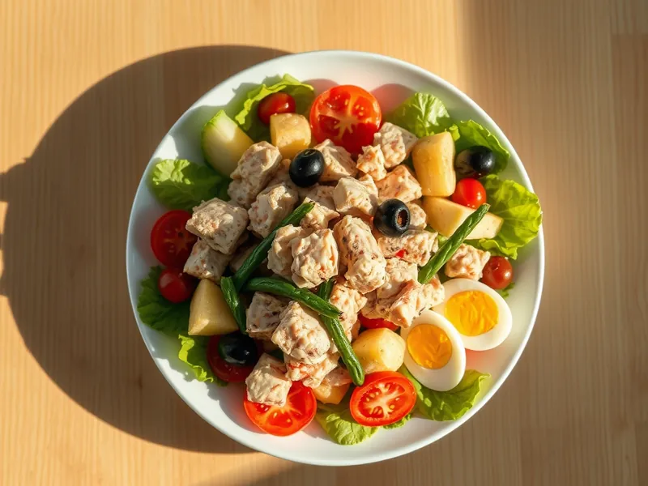

Салат «Нисуаз» с тунцом
Французский салат с тунцом, картошкой, стручковой фасолью, яйцом и оливками
25 мин2 порц.495 ккал на порциюБ 34 · Ж 27 · У 30Европейская кухня
Открыть в приложении: порции, таймеры, список покупок
Продукты на 2 порц.
- Тунец консервированный1 шт
- Картофель2 шт
- Стручковая фасоль150 г
- Яйцо куриное2 шт
- Помидоры2 шт
- Оливки / маслины50 г
- Салат листовой80 г
- Оливковое масло2 ст. л.
- Лимон1 ст. л.
- Соль0,5 ч. л.
- Перец чёрный молотый1 щеп.
Как готовить
- Очистите картофель, нарежьте кубиками 2 см и варите в подсоленной воде на среднем огне 12 минут. За 4 минуты до конца добавьте в ту же кастрюлю стручковую фасоль.
- Одновременно отварите яйца 9 минут, остудите в холодной воде и разрежьте на четвертинки.
- Слейте воду с картофеля и фасоли, дайте им остыть 5 минут.
- Смешайте оливковое масло, лимонный сок, соль и перец.
- Выложите листья салата, сверху картофель, фасоль, дольки помидоров, оливки, кусочки тунца и яйца. Полейте заправкой.
Совет. Тунец берите кусочками в собственном соку и не мните его в кашу. Картофель полейте частью заправки ещё тёплым, так он вкуснее.